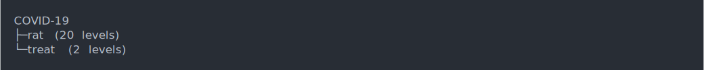

This vignette explains how to get started with using edibble. To understand some terminology, it might be helpful to look at vignette("grammar") instead.
⚠️ Before you read further, edibble still has a lot of limitations. Currently, it is better catered for the design of comparative experiments where the experimental resources are well defined. Survey or sampling designs, many of which require sample size calculations, are not the current focus.
💡 The big idea with edibble is that you specify an experimental design by expressing the experimental structure in a natural language of an everyday analyst. Some barriers in constructing an experimental design are
To construct an effective experimental design, domain knowledge must be incorporated. You cannot form a question, know what available resources are, limitation in conducting the experiment, etc, without knowing the subject matter. A person who constructs the experimental design 👩💻 does not necessarily have the domain knowledge 👵. A person who conducts the experiment 👩🔬 is likely not the person who constructed the design of experiment. How many people are involved in carrying out an experiment? A typical experiment will involve a diverse set of people - not all with statistical knowledge about experimental designs. You’d want everyone on the same page about the experiment, otherwise you could end up wasting precious resources! The cost of redoing an experiment is generally a lot more than redoing an analysis - you want to get it right in the first instance.
💬 Think of specifying experimental design as a conversation with collaborators.
Take for an example, the classic split-plot design that contains 4 wholeplots with 4 sub plots within each wholeplot (so 16 subplots in total). There are 2 treatment factors: fertilizer (with levels A and B) and variety (with levels V1 and V2). Each level of the fertilizer is randomly applied to two wholeplots. Each level of variety is randomly applied to two subplots within each wholeplot.
In edibble, we can code the above split-plot design as below. Each function below creates an intermediate construct of the experimental design.
set.seed(2020)
spdes <- start_design("Split-plot Design") %>%
set_units(wholeplot = 4,
subplot = nested_in(wholeplot, 4)) %>%
set_trts(fertilizer = c("A", "B"),
variety = c("V1", "V2")) %>%
allot_trts(fertilizer ~ wholeplot,
variety ~ subplot) %>%
assign_trts("random")There are a number of ways to visualise this intermediate construct. Just printing it gives a tree structure print out.
spdes
#> Split-plot Design
#> ├─wholeplot (4 levels)
#> │ └─subplot (16 levels)
#> ├─fertilizer (2 levels)
#> └─variety (2 levels)
#> Allotment:
#> • fertilizer ~ wholeplot
#> • variety ~ subplot
#> Assignment: randomIf the design can be reconciled, you can also convert into a table. You typically use the step below when you are ready to serve your design.
serve_table(spdes)
#> # An edibble: 16 x 4
#> wholeplot subplot fertilizer variety
#> <unit(4)> <unit(16)> <trt(2)> <trt(2)>
#> 1 wholeplot1 subplot1 A V1
#> 2 wholeplot1 subplot2 A V2
#> 3 wholeplot1 subplot3 A V2
#> 4 wholeplot1 subplot4 A V1
#> 5 wholeplot2 subplot5 A V1
#> 6 wholeplot2 subplot6 A V2
#> 7 wholeplot2 subplot7 A V1
#> 8 wholeplot2 subplot8 A V2
#> 9 wholeplot3 subplot9 B V1
#> 10 wholeplot3 subplot10 B V2
#> 11 wholeplot3 subplot11 B V1
#> 12 wholeplot3 subplot12 B V2
#> 13 wholeplot4 subplot13 B V2
#> 14 wholeplot4 subplot14 B V1
#> 15 wholeplot4 subplot15 B V2
#> 16 wholeplot4 subplot16 B V1You can see it outputs a data frame (or tibble) called edibble. The name origin of edibble is a play on tibble and can be thought of as tibble output for experimental design.
Once you get the rough idea of how edibble specifies design, you should be roughly be able to visualise what the experimental design layout is just from looking at the code alone. Take another example below. Can you see what the design is?
rcbd <- start_design("RCBD") %>%
set_units(block = 4,
plot = nested_in(block, 4)) %>%
set_trts(fertilizer = c("A", "B"),
variety = c("V1", "V2")) %>%
allot_trts(fertilizer:variety ~ plot) %>%
assign_trts("random")The above design is an example of a Randomised Complete Block Design. If you change the unit names from block to wholeplot and plot to subplot, it looks like the Split-plot Design, so what differs here aside from the unit names? Yes, the allocation of treatment is more restrictive in the Split-plot Design. This is one of the key benefits of using edibble to construct your experimental design; it makes you think about your experiment in bare terms.
⚠️ Please note that edibble is currently fragile. That means that the code is likely to break when you deviate from example code. Even it it works, you should diagnose the output to make sure it did what you expected.
In designing an experiment, there may be certain context of the experiment that are important but aren’t utilised in the design of the experiment. You can add notes about the experiment in the set_context().
These are shown when you print your intermediate construct of the design to remind you about some context of the experiment. I think these steps are important since you may come to realise later some of the context may need to be properly accounted for in the design later, or if there are unexpected results in the experiment, these notes may aid you in uncovering some unexpected sources of variation. For longer form contexts, it’s better to write them to an external file and you can write the name of the file in context.
The idea here is that the user is reminded about the experimental context but also these contexts can also be exported out together with the design table. Many experimental design software assume that the user knows what experimental design to implement from the get-go, but in practice there may be a lot of back-and-forth with the domain experts or others involved in the experiment. edibble tries to aid in the whole workflow and not just the design generation process.
des <- start_design("COVID-19") %>%
set_context(question = "Is the vaccine effective?",
where = "Tested in the lab",
"experiment is blinded",
"experiment is carried out by one technician",
"More details are in {.file experimental-details.txt}.") %>%
set_units(rat = 20) %>%
set_trts(treat = c("A", "B"))
des
You can write out what you plan to record for the experiment with record_vars. The record should be made on a unit defined in set_units. You can add data validation rules with expect_vars which is used when the data are exported. This means that data entry is restricted according to the rules you specify.
des <-
start_design(name = "Effective teaching") %>%
set_units(class = 4,
student = nested_in(class, 30)) %>%
set_trts(style = c("flipped", "traditional"),
exam = c("take-home", "open-book", "closed-book")) %>%
allot_trts(style ~ class,
exam ~ student) %>%
assign_trts("random") %>%
set_rcrds_of(student = c("exam_mark",
"quiz1_mark",
"quiz2_mark",
"gender"),
class = c("room",
"teacher")) %>%
expect_vars( exam_mark = to_be_numeric(with_value(between = c(0, 100))),
quiz1_mark = to_be_integer(with_value(between = c(0, 15))),
quiz2_mark = to_be_integer(with_value(between = c(0, 30))),
gender = to_be_factor(levels = c("female", "male", "non-binary")),
teacher = to_be_character(length = with_value("<=", 100)),
room = to_be_character(length = with_value(">=", 1)))
#> Warning: This function defunct in favour of `expect_rcrds`. Please replace `expect_vars` with
#> `expect_rcrds`
serve_table(des)
#> [38;5;246m# An edibble: 120 x 10[39m
#> class student style exam exam_mark quiz1_mark quiz2_mark gender room
#> [3m[38;5;246m<unit(4)>[39m[23m [3m[38;5;246m<unit(120)>[39m[23m [3m[38;5;246m<trt(2)>[39m[23m [3m[38;5;246m<trt(3)>[39m[23m [3m[38;5;246m<rcrd>[39m[23m [3m[38;5;246m<rcrd>[39m[23m [3m[38;5;246m<rcrd>[39m[23m [3m[38;5;246m<rcrd>[39m[23m [3m[38;5;246m<rcrd>[39m[23m
#> [38;5;250m 1[39m class1 student1 traditional open-book ■ ■ ■ ■ ■
#> [38;5;250m 2[39m class1 student2 traditional open-book ■ ■ ■ ■ [38;5;246mx[39m
#> [38;5;250m 3[39m class1 student3 traditional take-home ■ ■ ■ ■ [38;5;246mx[39m
#> [38;5;250m 4[39m class1 student4 traditional open-book ■ ■ ■ ■ [38;5;246mx[39m
#> [38;5;250m 5[39m class1 student5 traditional take-home ■ ■ ■ ■ [38;5;246mx[39m
#> [38;5;250m 6[39m class1 student6 traditional closed-book ■ ■ ■ ■ [38;5;246mx[39m
#> [38;5;250m 7[39m class1 student7 traditional take-home ■ ■ ■ ■ [38;5;246mx[39m
#> [38;5;250m 8[39m class1 student8 traditional open-book ■ ■ ■ ■ [38;5;246mx[39m
#> [38;5;250m 9[39m class1 student9 traditional open-book ■ ■ ■ ■ [38;5;246mx[39m
#> [38;5;250m10[39m class1 student10 traditional take-home ■ ■ ■ ■ [38;5;246mx[39m
#> [38;5;246m# … with 110 more rows, and 1 more variable: teacher <rcrd>[39m
export_design(des, "/PATH/TO/FILE.xlsx")Now you have an excel file that separates out observational units to their own sheet and data entering is now restricted to what you set out in expect_vars.